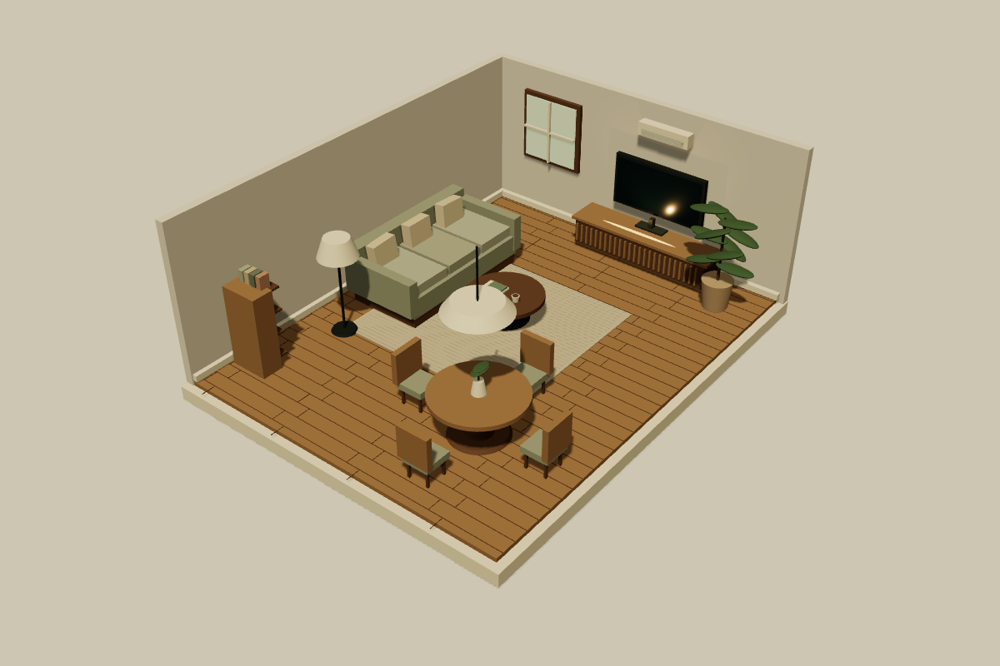
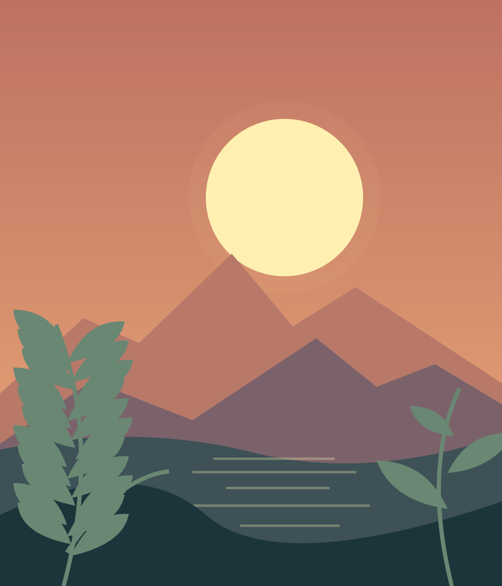
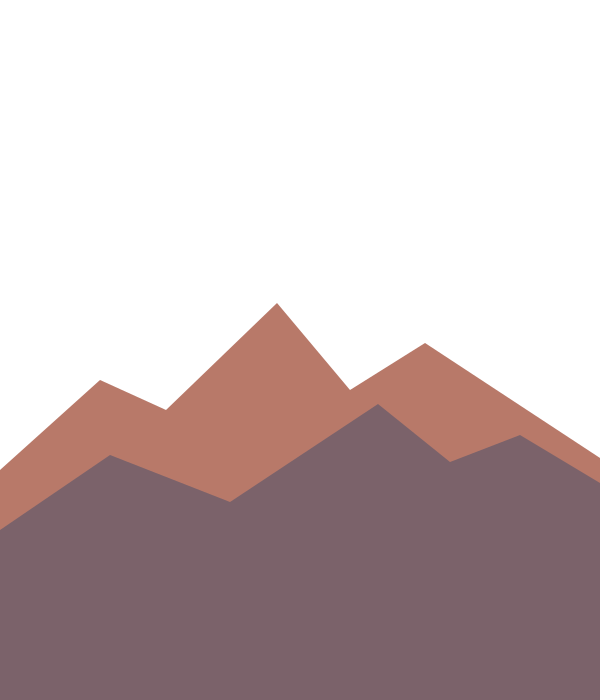
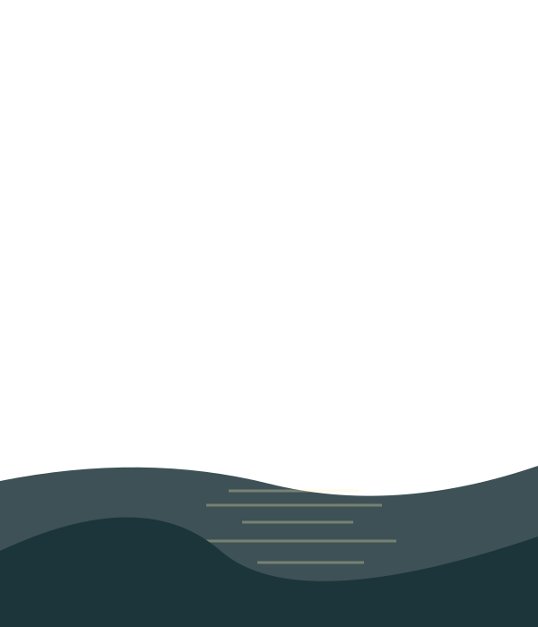
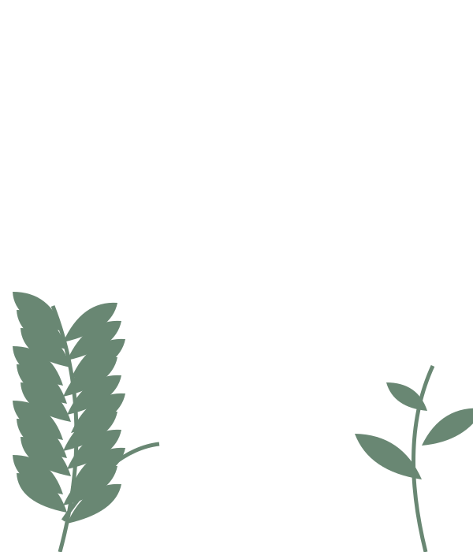
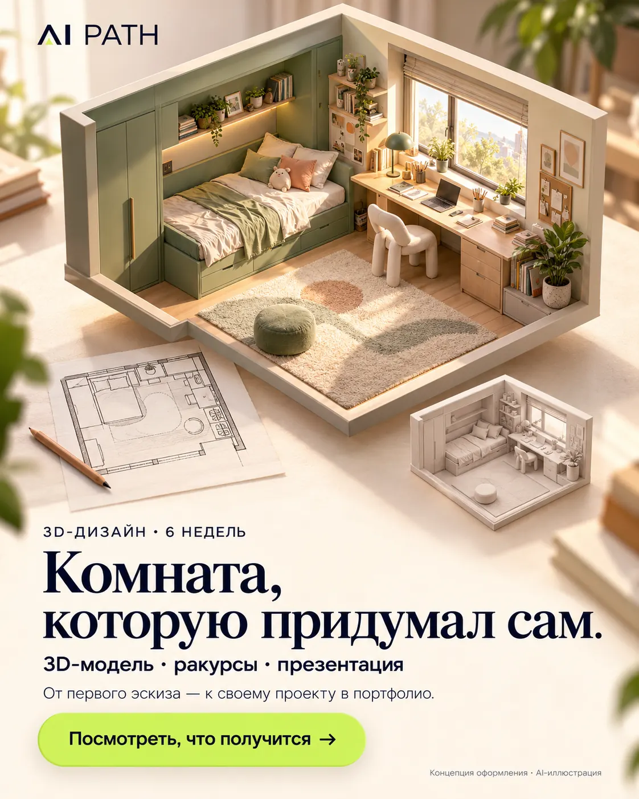
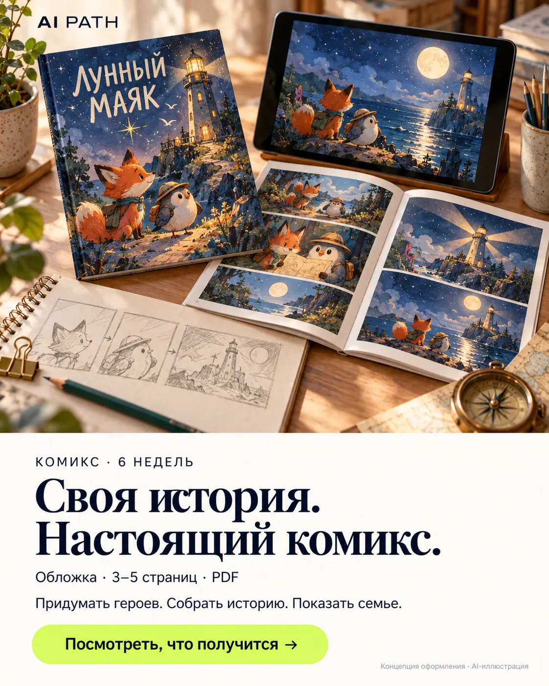
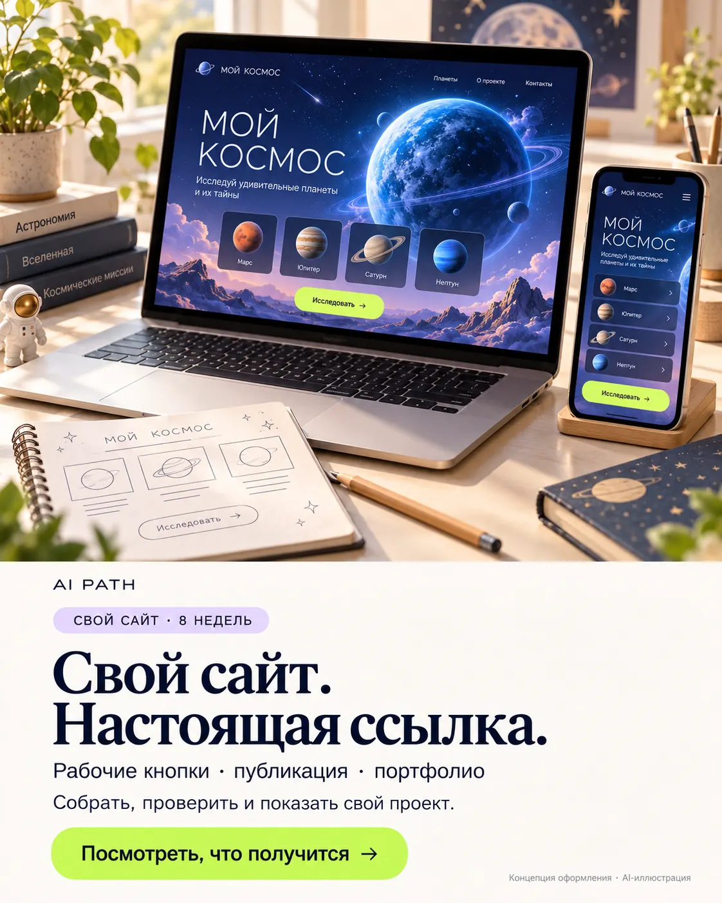

Карточка, выбор, понятная сумма.
Попробуй учебный сайт Pocitel: выбери завтрак и проверь, как меняется итог.
От интереса — к своему проекту. Придумывай истории, создавай 3D-миры и разбирайся в коде на личных онлайн-занятиях с наставником. Задачу подберём под возраст, опыт и интересы.
23 программы · 8 курсов по нейросетям · можно с нуля
 Маленький шаг.
Маленький шаг.Проекты наставника и учебные демо. Нажми, чтобы рассмотреть.
Три вопроса — и несколько подходящих маршрутов с объяснением выбора. Без регистрации, можно поменять любой ответ.
Какой результат тебе интереснее?
Оцени опыт в выбранной теме. Требования и короткая проверка готовности будут в плане.
Вместе со встречами и самостоятельной работой. Точный график согласуем до старта.
Сравни результат и требования. На небольшом экране таблицу можно сдвигать в сторону.

Кадр 3D-сцены · запусти и рассмотриСейчас показан кадр модели. Нажми «Покрутить 3D», чтобы запустить сцену.
Запусти комнату, поверни камеру и измени яркость. На пятой неделе свяжем настройки с тем, что человек видит на экране.
Что делаем на неделе 5 ↓Это примеры для разбора. Твой итог — один собственный интерактивный сайт; сложность модели выберем вместе.
Кому подойдёт
Для старта:
Заполни три строки своими словами. Эту заготовку можно использовать самостоятельно или принести на знакомство.
В PDF — выбранная программа, этапы, первая задача и шаблон идеи. Удобно сохранить, распечатать или переслать.
Проверь курс, подготовку и нагрузку. В запрос уже включены вопросы о полной стоимости, расписании и поддержке.
Включая встречи и самостоятельную практику. Объём проекта подстроим под доступное время.
Идея добавится в черновик письма. Сайт её не отправляет и не сохраняет после перезагрузки.
До решения об обучении согласуем полную стоимость, длительность встреч, расписание и поддержку. Возможные расходы на AI-сервисы уточним отдельно.
Кнопка откроет черновик в почтовом приложении. Проверь его и отправь. Если почта не настроена, скопируй заявку и отправь на safal0645@gmail.com или через Solvery.
Бесплатное знакомство доступно через профиль Solvery. Там же можно прочитать отзывы.
«Алексей хорошо объясняет»
Проекты наставника и учебные демо. Авторство, исходники и ограничения указаны внутри каждого примера.
Попробуй учебный сайт Pocitel: выбери завтрак и проверь, как меняется итог.
FLORA, Мори, ДАЛЬ и AI Desk: визуальные сайты и настоящий 3D-конфигуратор.
Прокрути страницу: плоский план получит стены, мебель, материалы и свет. Одна сцена, пять этапов.
Открытые проекты Алексея Сафонова и адаптации с указанием авторства. Нажми на изображение, чтобы рассмотреть его. Экспериментальные и учебные работы не выдаются за коммерческие заказы.
Игровые боты сражаются через HTTP API. Настоящий интерактивный бой, CI-тесты и исправленная мобильная вёрстка.
Исходники и режимы ↗Playwright-снимок реального локального боя встроенных демоботов.
Волны врагов, ловушки, перемещение, атака, очки и здоровье дерева. Собственный небольшой игровой прототип с тестами.
Исходники и тесты ↗Скриншот снят с настоящего запуска Godot, не AI-иллюстрация.
Город с камерой от третьего лица, персонажи, диалоги и смена дня и ночи. Три кадра обновлённого alpha-прототипа — нажми, чтобы рассмотреть.
Исходники этой сборки ↗Реальный кадр alpha-прототипа из ветки разработки: город и герой, C# / OpenGL.
Интерактивный 3D-тур, освещение, материалы и визуализация с Blender и Three.js.
Открыть проект ↗Скриншот опубликованного архитектурного портфолио.
Девять ракурсов процедурного города, RU/EN и 3D по кнопке. Разбираем управление камерой, загрузку сцены и лёгкий режим.
Открыть галерею и 3D ↗Разобрать в Design Lab →Скриншот нашей галереи. Мир и исходный рендер — Leon Lin, MIT; галерея и управление — Architectural AI Lab.
Прокрутка поднимает стены, расставляет мебель, проявляет материалы и включает свет. Этапы можно выбирать кнопками и ползунком.
Открыть интерактив ↗Изучить сцену в Design Lab →Устройство и исходники ↗На карточке — нарисованная схема. Внутри — работающая процедурная 3D-сцена AI PATH, учебный концепт.
Локальная студия роликов: сцены, озвучка, субтитры и экспорт видео.
Посмотреть проект ↗Кадр деморолика проекта, не скриншот интерфейса студии.
Уроки по Python, практические задания, тестирование и первые учебные проекты.
Попробовать ↗Скриншот работающего учебного интерфейса.
Примеры из авторского проекта «Живут в папках» про Иня и Янку: две обложки и страница готового черновика. Нажми на изображение, чтобы рассмотреть его.
На программе создаём собственную историю: придумываем персонажей, пишем диалоги, собираем раскадровку, проверяем постоянство героев и оформляем страницы. ИИ помогает с визуализацией; сюжетные решения остаются за автором.
Ветер унёс рисунок Янки. Инь хочет помочь — и героям нужен общий план.
Научишься: связывать название, героев и обложку с сюжетом.Инь хочет пригласить Янку посмотреть на звёзды. Бумажный самолётик проходит испытания.
Научишься: сохранять узнаваемость персонажей между выпусками.Готовая страница с последовательностью кадров и репликами. Записка дошла; ответ Янки остаётся открытым.
Научишься: выстраивать кадры, диалоги и открытый финал.Мир и персонажи — Юра. Продолжения созданы с помощью ИИ как черновики для авторской проверки. Представлены материалы авторского семейного проекта. Эти примеры показывают процесс создания комикса.
Помогу пройти путь от замысла и первых глав до оформления книги и подачи на Amazon KDP.
Для первой книги, короткого практического руководства или истории. ИИ помогает со структурой, черновиками и вариантами оформления, а ты принимаешь авторские решения и проверяешь результат.
До старта выберем язык и формат. Для Amazon нужен поддерживаемый KDP язык, например английский. Русского сейчас нет в официальном списке; для русскоязычной версии обсудим другой канал. Перевод проверяет человек, владеющий языком. Также проверим возможность публикации через твой аккаунт.
При подаче укажем AI-generated текст, изображения и переводы по правилам KDP. Редактура собственного текста с помощью ИИ относится к AI-assisted и не требует такого раскрытия. Решение и сроки публикации определяет Amazon; продажи не входят в обещанный результат программы.
Пример из нашего портфолио — кресло LUMA 01. Три ракурса одной модели: можно проверить, как сохраняются форма и детали.
От идеи кресла, стола или другого простого предмета — к собственной цифровой модели и визуальной презентации. Разбираем форму, пропорции, материалы, свет и работу с ИИ. На примере LUMA 01 доступны также оборот камеры и геометрия GLB/OBJ.
Концептуальное кресло с деревянным каркасом и светлой обивкой. Это рендер единой процедурной сцены.
Научишься: собирать форму предмета, выбирать материалы и свет.То же кресло с фронтальной камеры: сравниваем пропорции, симметрию и детали.
Научишься: проверять пропорции и постоянство модели между ракурсами.Боковой ракурс той же модели показывает силуэт, наклон спинки и связь частей.
Научишься: презентовать предмет со всех сторон и находить несостыковки.LUMA 01 — учебный предметный концепт, созданный с помощью кода и ИИ. Это цифровая модель и визуализация. Конструкция и эргономика требуют отдельной проверки; производственные чертежи и изготовление в программу не входят.
Учебные примеры для программы Design Lab. Разбираем визуальный стиль, SVG, 3D и состояние интерфейса — затем собираем один собственный интерактивный сайт ученика.
Ещё примеры сайтов: FLORA, Мори, ДАЛЬ и Pocitel в портфолио школы ↗. Новый предметный интерактив: AI Desk — материал, свет и камера ↗.
Нажимай шаги по порядку. Исходник остаётся для сравнения, а справа меняется результат. Это подготовленная иллюстрация из пяти SVG-слоёв: мы показываем её устройство и пересборку.





Исходник: пять подготовленных SVG-слоёв собраны в одну картинку. Пока ничего не изменено.
Чему учимся: Композиция первого экрана, адаптация и переключение визуальных вариантов.
Автомобильная презентация с четырьмя световыми этюдами, просмотром деталей и сохранением выбранного варианта.
Процесс: AI-рендер → цветокоррекция → кадрирование детали. Исходник и результат показаны рядом.
Вымышленный автомобиль, AI-изображение. Световые варианты — художественная цветокоррекция.
 02 / ATMOSPHERE
02 / ATMOSPHERE
Чему учимся: Камера, свет, запуск 3D, облегчённый режим и восстановление после ошибки.
Ночной сад с храмом, дождём и красной луной. 2D-иллюстрация реагирует на управление сразу, а 3D-сцену можно запустить по желанию.
Процесс: Иллюстрация → свет и дождь → новый кадр. 2D работает сразу; 3D включается отдельно.
Сцена адаптирована из ThreeUI Community, MIT. Интерфейс и управление — наша работа. На карточке — кадр работающей 3D-сцены.
Чему учимся: Слои SVG, параллакс, палитры и экспорт результата.
Разбор иллюстрации на пять слоёв: разнесение, изоляция, параллакс, три палитры и экспорт видимых слоёв в SVG.
Процесс: Целая иллюстрация → отдельные слои → новая палитра и состав. Итог можно скачать в SVG.
Работает с подготовленной авторской иллюстрацией. Автоматического разделения загруженных фотографий нет.
Чему учимся: Связь кнопок с состоянием, сценарии и сохранение настроек.
Изометрическая 3D-комната: свет, яркость, климат и четыре сценария. Настройки сохраняются в браузере и выгружаются в JSON.
Процесс: Всё выключено → вечерний сценарий → свой свет. Меняются схема комнаты и расчётная мощность.
На карточке — кадр работающей 3D-сцены. В демо есть 2D и 3D. Реальные устройства не подключены; мощность расчётная.
На выходе — один собственный проект с 2–3 сценариями, мобильной версией, исходниками и ссылкой на демо. Выбираем посильный вариант: презентацию, интерактивное объяснение или простую 3D-сцену.
Нужен компьютер с современным браузером. Сложность, темп и возможные расходы на AI-сервисы согласуем до старта. Все демо в этом разделе — учебные примеры наставника.
От «мне интересно» к работе,
которую можно показать.
Обсуждаю с наставником интересы, опыт и первую посильную задачу.
ЛюбопытствоДелаю первый шаг, задаю вопросы и исправляю ошибки вместе с наставником.
ПрактикаСобираю демонстрацию своей работы: комикс, ролик, модель, сайт или доработку игры.
Свой проектВыбираю следующий проект и направления, в которых хочется расти.
Мой выборСегодня — первый проект. Дальше — выбор.
Разработка, дизайн, анимация или исследования: ребёнок пробует задачи и понимает, что ему интересно. Объём и сложность согласуем до занятий.
Автор AI PATH, QA-инженер и ментор по применению ИИ. Помогаю создавать сайты, приложения и учебные проекты — от первой идеи до работающего результата, который можно проверить и показать.
Проекты и опыт на GitHub ↗Разберём, что тебе интересно, выберем посильную задачу и определим, как проверить результат. Можно задавать базовые вопросы и разбираться в своём темпе.
Познакомиться на Solvery ↗В профиле — отзывы и заявка на бесплатное 15-минутное знакомство. Полную программу обсудим отдельно.
Обучение Алексея Сафонова в Университете искусственного интеллекта. Нажми на документ, чтобы рассмотреть его, или открой оригинал в PDF.
Интенсив ·
Компьютерное зрение, обработка текстов и прогнозирование временных рядов.
Открыть PDF ↗Интенсив ·
Python, свёрточные сети и сегментация изображений.
Открыть PDF ↗Образование и вклад в учебные материалы.
Университет искусственного интеллекта
За инициативу, новые идеи и участие в разработке образовательных материалов.
Открыть PDF ↗Владимирский государственный университет · 2010 год
Квалификация — «Информатик-экономист». Специальность — «Прикладная информатика в экономике».
Открыть фото ↗Подготовленный учебный пример. Мы специально оставили ошибку в первой версии, чтобы показать процесс проверки. Можно повторить каждый шаг и сравнить результат.
В этом учебном макете специально оставлена ошибка. Нажми «Туман»: должна поменяться и подпись, и палитра пейзажа. Затем открой шаг 2.
Выбрана палитра: Закат
Проверки ещё не было. Начни с кнопки «Туман».
Роль наставника: помочь задать критерий, найти расхождение, объяснить исправление и проверить его тем же действием.
Да, у нас есть программы с нуля. Для нейросетей полезны основы Python, а для грантов и исследовательских презентаций нужен собственный проект. Подбор покажет подходящую точку старта и требования.
В AI Навигаторе попробуешь две работы, а на курсе выбора направления с ИИ исследуешь вакансии и выполнишь короткие пробы. Сравни варианты после подбора и обсуди выбор с наставником.
Сначала определим задачу и набор инструментов. Доступность сервисов, возможности компьютера и возможные дополнительные расходы проверим до начала работы.
4–16 недель — базовые планы программ. Выбранные часы показывают, сколько времени у тебя есть вместе со встречами и практикой. На знакомстве уточним объём проекта и реалистичный график под твою подготовку.
Поможем придать идее ребёнка форму: придумать историю, создать комнату или собрать свой сайт. Выберем посильную задачу и доведём её до понятного результата.
На обложках — AI-концепции возможных проектов. Ссылки в карточках открывают указанные примеры для разбора. Объём и базовый срок первого проекта уточним с учётом подготовки.

AI-концепцияОдин учебный 3D-проект: от первого плана до модели с материалами, светом и несколькими ракурсами.

AI-концепцияПридумать героев и собрать короткую законченную историю, которую можно читать и показывать семье.

AI-концепцияНебольшой сайт или веб-приложение: своя идея, работающие кнопки, проверка на телефоне и публикация.
За 16 недель пройдём путь от идеи и GitHub до рабочего MVP. Разберём CodeRabbit, Qodo, Codex Review, CI/CD и Lighthouse, работу через телефон и IDE, поиск ниши, SEO/SMM, клиентов, CRM и воронку продаж.
Результат — учебный MVP и проверяемые артефакты, а не обещание клиентов, дохода, гранта или инвестиций. В учебную CRM нельзя вносить реальные контакты.
В учебном архиве — 66 ноутбуков Jupyter. Из него отобраны 24 работы по пяти темам — это настоящие файлы, которые можно открыть на GitHub.
Все 8 курсов по нейросетям и каталог 66 ноутбуков →
Сравни шесть учебных задач: наглядная схема покажет, как устроена модель, какие данные ей нужны и что получится в конце.
Учебные работы из архива: зависимости, данные и результаты отдельных экспериментов могут быть устаревшими. Метрики из названий файлов не проверены повторно. Выбираем один ноутбук, разбираем код, запускаем проверки и публикуем собственное объяснение, а не обещаем пройти все 24 сразу.
Два дополнительных направления для тех, кто хочет не только учиться, но и представлять собственные проекты экспертам.
Выбираем тему, работаем в GitHub, создаём прототип, проверяем его, оформляем демовидео и питч. Перед подачей сверяемся с правилами конкретного хакатона.
Оформляем problem statement, проверяем исследования и критерии отбора, готовим one-pager, бюджет, этапы, доказательства и материалы для экспертов.
Приведены примеры конкурсных разработок, подготовленных документов и заявок на рассмотрении, а не доказательства побед или полученных грантов. Участие, допуск и финансирование зависят от требований организаторов. Для новичка сначала рекомендуется базовая программа.
Путь начинается не с массовой рассылки, а с результатов: воспроизводимый эксперимент, тесты, baseline, честные ограничения, короткий memo на английском и релевантный канал.
Проблема, тесты, методика, результаты, limitations, демо, GitHub.
Умение объяснить работу внешнему эксперту и ответить на критические вопросы.
Субсидированные API-кредиты (до $1 000) для квалифицирующихся исследований. Требуются подходящая исследовательская аффилиация и нахождение в стране, поддерживаемой OpenAI API. Это не универсальная форма приёма проектов; ограничения страны необходимо проверить до подачи.
Проверить официальный маршрут ↗Четырёхмесячная очная или удалённая fellowship-программа по AI safety. По опубликованным условиям участие требует права на полную занятость и нахождения в США, Великобритании или Канаде; визовую поддержку для fellows не предоставляют. Проверяй право на работу до заявки.
Изучить условия fellowship ↗Исследовательская стажировка для тех, кто уже учится на бакалавриате, магистратуре или PhD. Требуется действующее зачисление и очная работа; не универсальная подача стартап-идеи.
Официальные требования ↗Можно самостоятельно представить ML-прототип и исходники для оценки сообществом. Условия хостинга зависят от выбранной технологии. Публикация не означает партнёрства с лабораторией.
Как опубликовать демо ↗Доступ к API, fellowship, студенческая стажировка и публичное демо — разные типы возможностей, с разными ограничениями по стране, аффилиации и праву на работу. Не обещаем доступ в ведущие лаборатории, положительный ответ, оплату или грант. Проверяем актуальные требования, права на код и данные. Отправка возможна только после согласования с владельцем проекта и по официальному каналу.
Выбери интересный результат, посмотри свой план и обсуди первый шаг с наставником. Если пока сомневаешься — начни с трёх вопросов.